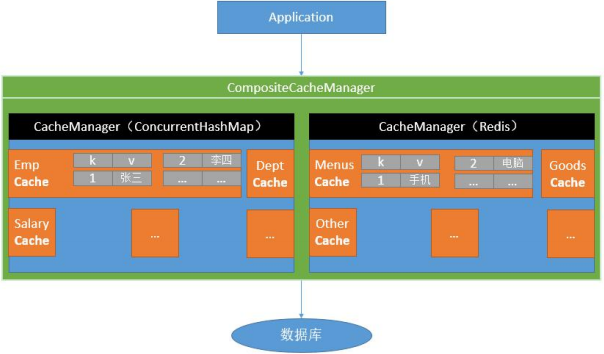
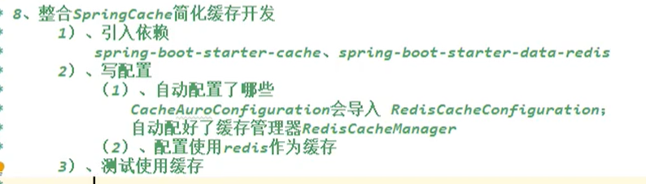
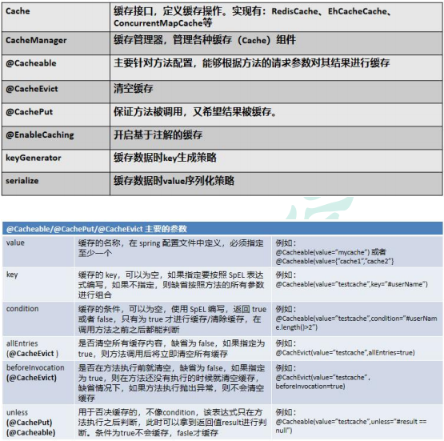
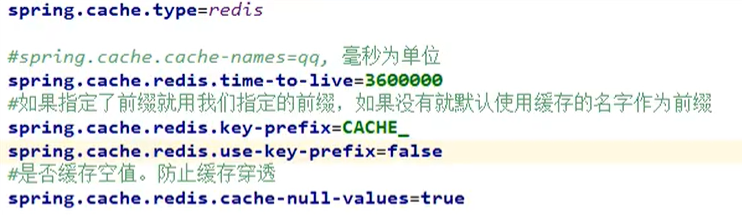

# Spring Cache
# 1、简介
主要省去了我们编写判断缓存是否有数据，添加缓存，没有缓存查数据库等重复性操作。
- Spring 从 3.1 开始定义了 org.springframework.cache.Cache
和 org.springframework.cache.CacheManager 接口来统一不同的缓存技术；
并支持使用 JCache（JSR-107）注解简化我们开发； - Cache 接口为缓存的组件规范定义，包含缓存的各种操作集合；
Cache 接 口 下 Spring 提 供 了 各 种 xxxCache 的 实 现 ； 如 RedisCache ， EhCacheCache , ConcurrentMapCache 等； - 每次调用需要缓存功能的方法时，Spring 会检查检查指定参数的指定的目标方法是否已
经被调用过；如果有就直接从缓存中获取方法调用后的结果，如果没有就调用方法并缓
存结果后返回给用户。下次调用直接从缓存中获取。 - 使用 Spring 缓存抽象时我们需要关注以下两点；
- 1、确定方法需要被缓存以及他们的缓存策略
- 2、从缓存中读取之前缓存存储的数据
# 2、基础概念

# 整合 Spring Cache 简化缓存开发
# 1、引入依赖
<dependency> | |
<groupId>org.springframework.boot</groupId> | |
<artifactId>spring-boot-starter-data-redis</artifactId> | |
<exclusions> | |
<exclusion> | |
<groupId>io.lettuce</groupId> | |
<artifactId>lettuce-core</artifactId> | |
</exclusion> | |
</exclusions> | |
</dependency> | |
<dependency> | |
<groupId>org.springframework.boot</groupId> | |
<artifactId>spring-boot-starter-cache</artifactId> | |
</dependency> |

简单配置使用 redis 作为缓存
开启缓存功能 @EnableCaching
spring: | |
cache: | |
type: redis |
# 2、注解

- 每一个需要缓存的数据我们都来指定要放到那个名字的缓存。【缓存的分区 (按照业务类型分)】
- 代表当前方法的结果需要缓存，如果缓存中有，方法都不用调用，如果缓存中没有，会调用方法。最后将方法的结果放入缓存
- 默认行为
- 自定义操作：key 的生成
- 指定生成缓存的 key： key 属性指定，接收一个 Spel
- 指定缓存的数据的存活时间：配置文档中修改存活时间
- 将数据保存为 json 格式
@Cacheable(value = "deps", key = "targetClass + methodName + #teamId") // 类名 + 方法名 + 参数 |
# 3、将数据保存为 json 格式
# 原理：
CacheAutoConfiguration-> RedisCacheConfiguration->
自动配置了 RedisCacheManager-> 初始化所有的缓存 -> 每个缓存决定使用什么配置如果 redisCacheConfiguration 有就用已有的，没有就用默认配置
-> 想改缓存的配置，只需要给容器中放一个 RedisCacheConfiguration 即可
-> 就会应用到当前 RedisCacheManager 管理的所有缓存分区中
# 配置
/** | |
* @author WangXuefeng | |
* @version 1.0 | |
* @date 2021/7/21 15:50 | |
* @description redis 缓存配置 | |
*/ | |
@Configuration | |
@EnableConfigurationProperties(CacheProperties.class) | |
public class MyCacheConfig { | |
/** | |
* | |
* @ConfigurationProperties ( | |
* prefix = "spring.cache" | |
* ) | |
* public class CacheProperties 源码是从这里读取的配置数据 | |
* 但是 @ConfigurationProperties 注解并没有把它添加到容器 我们直接获取拿不到， | |
* 我们可以在我们的配置类上面加上 @EnableConfigurationProperties (CacheProperties.class) | |
* 指定配置文件生效且可在容器中获取 | |
* | |
* | |
* 配置文件的东西没用上 | |
* @return | |
*/ | |
@Bean | |
public RedisCacheConfiguration redisCacheConfiguration(CacheProperties cacheProperties){ | |
RedisCacheConfiguration config = RedisCacheConfiguration.defaultCacheConfig(); | |
// 配置序列化配置 默认 jdk | |
config = config.serializeKeysWith(RedisSerializationContext.SerializationPair.fromSerializer(new StringRedisSerializer())); | |
config = config.serializeValuesWith(RedisSerializationContext.SerializationPair.fromSerializer(new GenericJackson2JsonRedisSerializer())); | |
// 将配置文件中的配置生效 模仿源码 | |
CacheProperties.Redis redisProperties = cacheProperties.getRedis(); | |
if (redisProperties.getTimeToLive() != null) { | |
config = config.entryTtl(redisProperties.getTimeToLive()); | |
} | |
if (redisProperties.getKeyPrefix() != null) { | |
config = config.prefixKeysWith(redisProperties.getKeyPrefix()); | |
} | |
if (!redisProperties.isCacheNullValues()) { | |
config = config.disableCachingNullValues(); | |
} | |
if (!redisProperties.isUseKeyPrefix()) { | |
config = config.disableKeyPrefix(); | |
} | |
return config; | |
} | |
} |

# 4、级联更新所有关联的数据
/** | |
* 级联更新所有关联的数据 | |
* | |
* @CacheEvict: 失效模式 | |
* @CachePut: 双写模式，需要有返回值 | |
* 1、同时进行多种缓存操作：@Caching | |
* 2、指定删除某个分区下的所有数据 @CacheEvict (value = "category",allEntries = true) | |
* 3、存储同一类型的数据，都可以指定为同一分区 | |
* @param category | |
*/ | |
// @Caching(evict = { | |
// @CacheEvict(value = "category",key = "'getLevel1Categorys'"), | |
// @CacheEvict(value = "category",key = "'getCatalogJson'") | |
// }) | |
@CacheEvict(value = "category",allEntries = true) // 删除某个分区下的所有数据 | |
@Transactional(rollbackFor = Exception.class) | |
@Override | |
public void updateCascade(CategoryEntity category) { | |
RReadWriteLock readWriteLock = redisson.getReadWriteLock("catalogJson-lock"); | |
// 创建写锁 | |
RLock rLock = readWriteLock.writeLock(); | |
try { | |
rLock.lock(); | |
this.baseMapper.updateById(category); | |
categoryBrandRelationService.updateCategory(category.getCatId(), category.getName()); | |
} catch (Exception e) { | |
e.printStackTrace(); | |
} finally { | |
rLock.unlock(); | |
} | |
// 同时修改缓存中的数据 | |
// 删除缓存，等待下一次主动查询进行更新 | |
} |
# 5、Spring-Cache 的不足之处：
1）、读模式
缓存穿透：查询一个 null 数据。解决方案：缓存空数据
缓存击穿：大量并发进来同时查询一个正好过期的数据。解决方案：加锁？默认是无加锁的；使用 sync = true 来解决击穿问题
缓存雪崩：大量的 key 同时过期。解决：加随机时间。加上过期时间
2)、写模式：（缓存与数据库一致）
1）、读写加锁。
2）、引入 Canal, 感知到 MySQL 的更新去更新 Redis
3）、读多写多，直接去数据库查询就行
# 原理：
CacheManager (RedisCacheManager)->Cache (RedisCache)->Cache 负责缓存的读写
# 6、总结：
常规数据（读多写少，即时性，一致性要求不高的数据，完全可以使用 Spring-Cache）：写模式 (只要缓存的数据有过期时间就足够了)
特殊数据：特殊设计